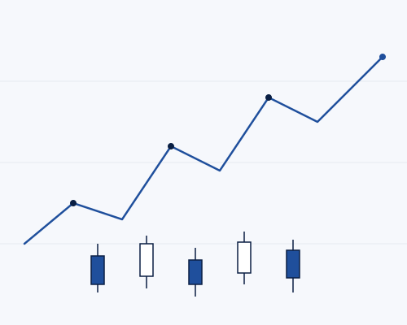
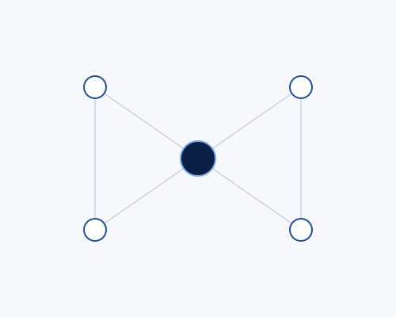

KBO Corporate Finance · Bénin
Former aux marchés, aider les entreprises à devenir bancables, conseiller les investisseurs. Trois métiers, une même exigence : comprendre avant d'agir, structurer avant de risquer.
Trois pôles
Apprendre à lire et affronter les marchés — de l'initiation grand public au niveau des professionnels du secteur.
Voir les formations → 02Structurer votre activité pour devenir bancable, avec un diagnostic gratuit et un parcours clair, étape par étape.
Devenir bancable → 03Investir avec méthode : définir vos objectifs, construire une allocation cohérente et garder le cap dans la durée.
Explorer le conseil →Comment nous travaillons
Comprendre avant d'agir, structurer avant de risquer, transmettre ce qui a fait ses preuves. Trois principes qui guident chaque formation, chaque dossier et chaque conseil.
On part de votre situation réelle — pas d'un modèle générique. On écoute, on mesure, on clarifie l'objectif.
On met en place la méthode : un plan, des repères, une gestion du risque. Rien d'improvisé.
On vous rend autonome : vous comprenez ce que vous faites et pourquoi. La confiance vient de là.
En vidéo
Des marchés régionaux à la bancarisation d'une petite entreprise, nous rendons des sujets réputés complexes clairs et actionnables. Placez ici votre vidéo de présentation ou une image forte.
Voir les ressources →
Une formation, un diagnostic de bancabilité, un conseil en investissement — dites-nous où vous en êtes, on avance ensemble.